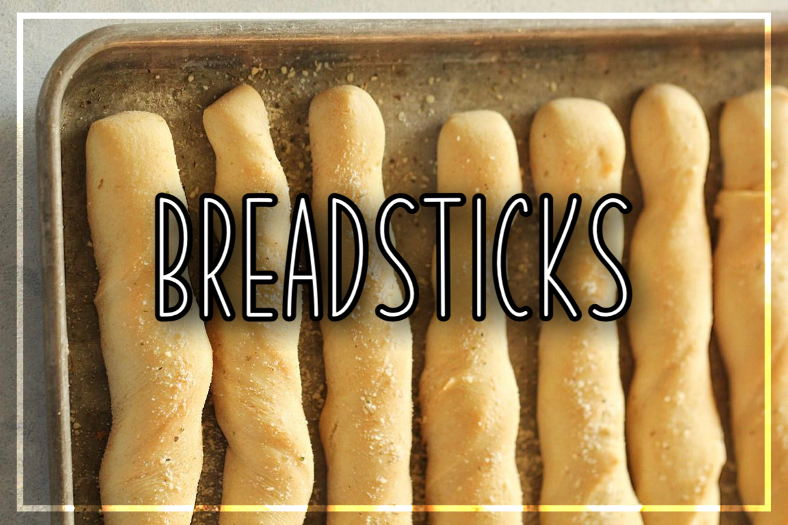

Hello! My name is Alyssa, an Education Major attending Western Illinois University. This is my second year at WIU and I couldn't be happier with the college choice I chose. One of the biggest things about me is that I love Italian food; pizza, lasagna, chicken Alfredo, and so many more Italian dishes.
Since I was a little kid, I have loved to read and write. This strived me to pursue an English major, and as an English Major who loves to read and write, I find it extremely important to understand what I am reading and writing. It irritates me when I stumble across a misspelled word, or when a body of text is hard to understand due to its font, size, colors, and so on. I love grammar and in my free time, I like to brush up on it, as well as vocabulary words! There are so many things to learn, and the English dictionary can be a great place to start.
I also love Italian food, which inspired me to create a blog about Italian dishes such as pizza, chicken Alfredo, lasagna, and so on. There are many blogs about Italian dishes, but some of them may contain difficult fonts to read, or aren’t friendly to individuals who have a hard time on the internet; this is why I am creating my Italian dish website. Everyone should be thought of when creating a website, not just a few select that you think can read your blog. It is so important to me to create a friendly website that everyone can assess without a problem!
This website will contain Italian dish recipes, the origin, and a lot of great information about the dish itself. I strive to create a website that everyone can enjoy and can learn from; it is vital to me that everyone is included. Why doesn’t want to learn about Italian dishes, anyways?
This project is dedicated to foodways research in a lot of ways, but the main reason is that is I feel like people should know more about Italian food, aside from it being extremely good! A lot of people don't know the history behind most Italian food, and I think that it is extremely important for individuals to know the history behind the dishes. For example, not all Italian food come from Italy! Not only is it super important to know the history behind Italian dishes, but we should appreatiate the culture behind the food and value it as a whole. The culture is extremely rich and full of great information that everyone should know, even those who appretiate the food as it is. Throughout this website, you will learn more than you did before, and I hope you learn to love Italian food a little more after you're done!
Hello, and welcometo my blog. My name is Alyssa and over the course of the Fall semester of 2023, I have been conducting an Italian Dish website for one of my English classes. If you haven’t read any of the blogs, do not fret, as this blog explains in-depth what my website is all about.
Over the course of the Fall semester, I have dedicated my time to creating a website that holds a lot of valuable information about Italian food. Since I was a little kid, Italian food has been one of my favorite foods to eat; and why doesn’t want to learn about Italian dishes? There are many reasons why Italian food is so important, such as the simplicity of the food, the rich history, and the delicious tastes! There are so many reasons why everyone should learn about the cuisine, and this website is one of the best places to start.
In this website, you’ll find everything you need to learn about the Italian cuisine, such as the history of some Italian dishes, where to get them, and even some simple recipes you can easily make at home! There are five blogs posted on the website that have great information about the main Italian dishes you desire.
The Wild History of BreadsticksBreadsticks are one of the most popular appetizers in the world, and it has a great, wild history. They originated from Italy in 1675 when an ill duke didn’t have the appetite to eat anything else. After he recovered,the duke became the king and a main dish in the household. Soon after, the dish slowly became one of the most popular in the world. There are many great recipes for breadsticks as well, some even containing cheese inside!
The Truth About Chicken AlfredoPasta and noodles are one of the staples when it comes to Italian food; there are so many options with pastas, and don’t get me started on the different shapes! One of the most popular pastas out there is chicken Alfredo; a classic yet simple dish to make at home. Chicken Alfredo started in Rome in 1908, but it’s nothing like the one we now know. Although it’s extremely popular in the United States, it’s not that popular in Rome or Italy; in fact, some people in Rome don’t know it’s a dish.
All About SpaghettiAnother popular pasta in the United States is spaghetti; so simple yet a great classic to cook. The popularity of pasta came from the 20th century and grows every year. There are debates on whether or not spaghetti came from Italy, but some believe that an individual named Marco Polo brought it back from his voyage from China. You can find any different spaghetti recipes you can easily make at home, or go to an Italian-based restaurant and eat it there!
Bread, Sauce, and ToppingsAnother famous Italian dish is one that everyone (hopefully) loves; one that you can customize with many different toppings: pizza. This delicious dish comes in a circle, but cut in triangles (or sometimes squares). You can put so many different toppings on pizza, mainly meat and veggies, but sometimes even pineapple. The original pizza came from the 18th century in Naples. The city experienced a wide range of lower-class people that had nothing to eat, and the people that owned little shops needed money; so, the lower-class individuals bought mushrooms and and herbs cooked on a stale loaf of bread. From there on, it became a great widespread dish. “In the United States, 350 slices of pizza are eaten every second and at least 40% of Americans eat pizza once a week”, Jeffery Miller states (Miller, 2019). It is an extremely popular dish and grows every day!
Raviolli AppreationThe last dish talked about on the Italian Food website is Ravioli. There are different kinds of Ravioli you can eat, and you can easily make this dish at home as well. The word “ravioli” comes from the Italian word “rivvolgere”, which translate to “to wrap”. You wrap ravioli and it contains either meat or cheese inside, and is a great staple in Italy. There are many different ways you can make the dish, but it mainly consists of pasta dough, meat or cheese, and boiling water!
There are many different reasons why you should check these blogs out; they contain such rich information, recipes, and so much more! This is just a glimpse of the Italian-based website, and I’m sure you won’t be disappointed.
Breadsticks go well with everything; especially pasta dishes. The history of the delicious bread originated from Italy in 1675 when the young duke - Vittorio Amedo II - was seriously ill at nine years old. The doctor noted that he got food poisoning from bread that his mother was feeding him, which caused him to be so ill. He made their baker create a new bread that the boy could digest a lot better so he would be able to eat properly.
The duke recovered after that and became the king in 1713. That bread became the top bread choice in their household, and slowly became a delicious side dish.
To this present day, breadsticks now come in different forms. Unlike the original breadstick that was created in the late 1600s, the breadstick we now know has many different seasonings and herbs to really make that flavor pop. It is now a classic side dish that comes with many entrees, such as salads, soups, pizza, pastas, and more!
Chicken Alfredo - or sometimes called Alfredo pasta - is an extremely popular dish that originated from Italy. However, the Chicken Alfredo we have in the United States is nothing like the Alfredo that originated from Italy. It all started when a man named Alfredo di Lelio came up with the dish in Rome in 1908; research says that he came up with the dish after his wife told him she was exhausted after giving birth. You may be asking yourself: well, how did Alfredo’s dish become so popular? Well, in the 1920s, a couple Hollywood stars had the idea to visit Rome on their honeymoon, and had the opportunity to taste Alfredo’s dish. They thanked him and even called him the “king of noodles”. When they went back to the States, they spread the word of the delicious pasta, and it became one of the most famous pasta dishes in the world.
Although it is very popular in the United States today, it isn’t popular in Rome; in fact, almost no one serves it in restaurants! It never took off in Rome like it did across the world. In fact, some people in Rome don’t know it’s a thing. However, it is still very popular overseas, and many people enjoy it to this day.
There are many pastas that have originated from all over, one of those pastas being spaghetti. Some people believe that spaghetti came from Italy, but others believe that Marco Polo brought it back from his voyage from China. There isn’t much research about spaghetti, besides from it being brought from another country!
Spaghetti comes from the word “Spago”, which translate to “string” or “twine”. Because of the texture, Spaghetti can easily handle a tomato, as well as virgin oil. This is why the pasta is served with tomato sauce, followed by meat and vegetables. It is also served with delicious breadsticks, which we’ve discussed earlier in the blogs.
You can find spaghetti all over the world, despite it being from across the country. The popularity of pasta began around the 20th century and keeps on growing over the years. You can find many types of spaghetti noodles in grocery stores, but the most common one we know is the long, thin noodle. This dish is served in many places, especially Italian-based restaurants.
Although we would like to take credit, pizza did not originate from the United States. In fact, pizza originates as far back as the ancient Greek and Roman times! An individual named Virgil wrote about individuals of Trojan citizens fleeding their cites destruction and landed in Latium, Italy. They found themselves extremely hungry and devoured a meal of mushrooms and herbs cooked on stale round loaves. From there on, pizza became famous and widespread.
However, the pizza we know today is much different. This pizza came from the 18th century Naples. The city experienced a surge of peasants that were hungry for anything, and they needed something simple and cheap to eat. Vendors began making pizzas with topping as simple as garlic and salt, but sometimes had tomatoes and cheese.
The first Pizzeria opened in 1738 as a stand for Naples peddlers. Around 100 years later, that same spot expanded and got chairs and tables for customers. The individual who opened the delicious spot to eat was Antica Pizzeria Port’Alba!
The word “ravioli” originates from the Italian word “rivvolgere” which means “to wrap”. This dish has become a favorite among many in the United States despite it originating further back in history. Ravioli is technically considered a dumpling that contains filling between slices of pasta. Ravioli comes in many different shapes and forms, but the msot common one we know is a square that has either cheese or meat inside. Today, it is an extremely popular food you can buy froze, canned, or packaged at your local grocery store. There are many commercials about Ravioli and how it is such a simple dish to whip up! This dish is commonly served with a broth or sauce, and is a staple in Italy.
This dish originated from Italy, dating back as far as the 14th century. However, there were mentions of ravioli in the 14th century in England as well; one of King Richard II’s chefs had a cookbook that contained a recipe for ravioli.
There are many different ways to make ravioli, but all it is made of is pasta dough, filling, and placed together in a pot of boiling water!
This is where we part ways. I hope you found some interesting facts about Italian dishes you did not know, and I hope you had fun reading through the website. Until next time!
Italian Food History Breadstick History Spaghetti Facts! Who Invented Pizza? Ravioli Appreation Chicken Alfredo History